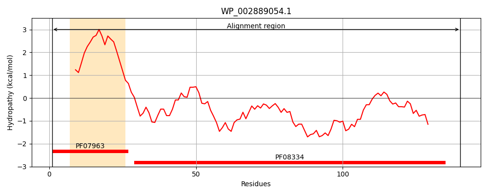
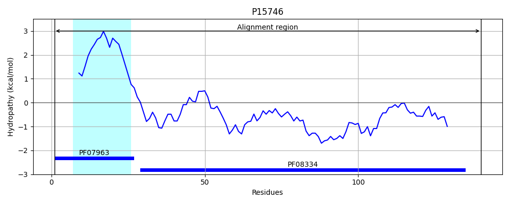
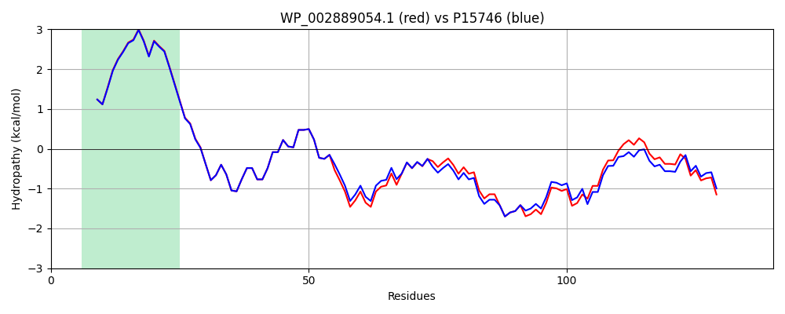

Hit Accession: P15746
Hit TCID: 3.A.15.1.1
Hit Description: gnl|BL_ORD_ID|9181 gnl|TC-DB|P15746|3.A.15.1.1 General secretion pathway protein G precursor (Pullulanase secretion protein pulG) - Klebsiella pneumoniae.
Mach Len: 140
e:0.000000
Query TMS Count : 1
Hit TMS Count: 1
TMS-Overlap Score: 1.000000
Predicted Substrates:CHEBI:36080;protein
BLAST Alignment:
Score: 687 , Bit scores: 269 bits, E-value: 8.9e-95, Alignment length: 140, Percentage identity: 90
Query: 1 MQRQRGFTLLEIMVVIVILGILASLVVPNLMGNKEKADRQKVVSDLVALEGALDMYKLDNSRYPNTEQGLQALVTAPAAEPHARNYPEGGYIRRLPQDPWGNEYQLLSPGQHGAIDVFSVGPDGMPDTNDDIGNWTLGKK 140
MQRQRGFTLLEIMVVIVILG+LASLVVPNLMGNKEKADRQKVVSDLVALEGALDMYKLDNSRYP TEQGLQALV+AP+AEPHARNYPEGGYIRRLPQDPWG++YQLLSPGQHG +D+FS+GPDG+P++NDDIGNWT+GKK
Sbjct: 1 MQRQRGFTLLEIMVVIVILGVLASLVVPNLMGNKEKADRQKVVSDLVALEGALDMYKLDNSRYPTTEQGLQALVSAPSAEPHARNYPEGGYIRRLPQDPWGSDYQLLSPGQHGQVDIFSLGPDGVPESNDDIGNWTIGKK 140 | Protein Hydropathy Plots: |
|---|
|  |  |
Pairwise Alignment-Hydropathy Plot:
|
|---|
|  |